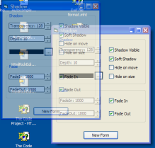

VB6 WinSubHook (92K)
VB6 WinSubHook (92K)
 20 Feb 2003
20 Feb 2003
First Posted
 Subclassing Without The Crashes
Subclassing Without The Crashes

Subclassing and Hooking with Machine Code Thunks
Eliminate the .bas modules for AddressOf tasks for easier to manageable subclassing and hooking code.
VB's AddressOf is limited in that it can only provide an address to a function within a module, and not one in a class. This makes doing many things with it harder. However, there is a way of getting a callback to a class function, although you need to know a little assembler to do it. Don't worry if you don't though - here Paul Caton presents some fantastic reusable code showing how to subclass or hook any Window without modules using this technique.
What's In The Download
The download contains five different samples:
- Shadow
Demonstrates a control which uses the cSubClass assembler thunk to add a configurable shadow and fade-in/fade-out effects to any form. Similar to the sample Drop Shadows except everything runs without external modules. - SubClass
A full demonstration of the features of subclasser through this method. You can choose to receive all messages before or after they are processed by Windows, or to filter the messages for better performance. All using a single class... - Timer
A completely self contained Timer which works outside forms. - ApiWindow
Demonstrates how to create Windows with a custom class and control their behaviour through the instantiating class. If you've bought or glanced at Stephen Teihet's book "Subclassing and Hooking with Visual Basic" then you'll immediately see how much easier it is to do it this way! - Hooker
Not actually a soft-pr0n game as I had first hoped, but rather a demonstration of using the technique to install a Windows Hook for pretty much any type of hook you care to use. Demonstrates WH_SHELL, WH_MOUSE, WH_KEYBOARD, WH_FOREGROUNDIDLE and the various other message related-hooks.
Subclassing Without Modules - A Quick Overview
This describes the steps need to set a subclass and demonstrates using the code to respond to the WM_MINMAXINFO message to prevent a form being made smaller than a certain size. First add cSubClass.cls from the download and then reference the included WinSubHook.TLB (Windows/Subclass/Hook/Timer interface 1.4). Once this is done, you start subclassing by:
- Implementing the ISubClass interface.
Implements iSubClass Private Sub iSubclass_After( _ lReturn As Long, _ ByVal hwnd As Long, _ ByVal uMsg As WinSubHook.eMsg, _ ByVal wParam As Long, _ ByVal lParam As Long) ' ' Respond to any messages you want to subclass ' after Windows has processed them here ' End Sub Private Sub iSubclass_Before( _ bHandled As Boolean, _ lReturn As Long, hwnd As Long, uMsg As WinSubHook.eMsg, wParam As Long, _ lParam As Long) ' ' Respond to any messages you want to subclass ' before Windows has processed them here ' End Sub - Creating an instance of the cSubClass object and starting the subclasser:
Private m_cSubClass As cSubClass Private Sub Form_Load() Set m_cSubClass = New cSubClass ' hWnd to subclass, then object which implements ' iSubClass: m_cSubClass.SubClass Me.hWnd, Me ' Now you can specify individual messages to ' respond to before or after Windows: m_cSubClass.AddMsg WM_GETMINMAXINFO, MSG_AFTER End Sub
- Writing your subclassing code. In this case, we use WM_GETMINMAXINFO to
prevent the form from being made too small:
Private Type MINMAXINFO ptReserved As WinSubHook.Point ptMaxSize As WinSubHook.Point ptMaxPosition As WinSubHook.Point ptMinTrackSize As WinSubHook.Point ptMaxTrackSize As WinSubHook.Point End Type Private Sub iSubclass_After( _ lReturn As Long, _ ByVal hwnd As Long, _ ByVal uMsg As WinSubHook.eMsg, _ ByVal wParam As Long, _ ByVal lParam As Long) ' Dim mmiT As MINMAXINFO ' Copy parameter to local variable for processing CopyMemory mmiT, ByVal lParam, LenB(mmiT) ' Minimium width and height for sizing mmiT.ptMinTrackSize.x = 256 mmiT.ptMinTrackSize.y = 256 ' Copy modified results back to parameter CopyMemory ByVal lParam, mmiT, LenB(mmiT) ' End Sub
The World Is Never Enough
Although this is by far the best subclassing sample I've seen, I would note that at the current release you cannot subclass the same window from more than one class without causing a crash. As long as you're careful about how you apply the subclass you will be fine, but if you even inadvertently start subclassing the same window twice (the usual way this happens is when you use the subclasser in a user control or a DLL, and the messages you need to receive are send to the container or parent of the object, and then you put two instances of the control on the same container - see Subclassing without the crashes for more details) you will soon start to see random crashes. On my system this manifests itself as the exciting vanishing window syndrome! There are two possible ways to stop this happening: use ComCt32.DLL v6.0 subclassing (fixes all problems; the downside is it requires new ASM code and only works on XP) or attempt to use the Windows Properties database again. I will keep you posted.
More Information
If you're still using VB6 then I would definitely recommend getting hold of a copy of Matt Currland's excellent book "Advanced Visual Basic 6". Although it was unfortunately published just that wee bit too late as the .NET framework was occupying everyone else's minds, it nevertheless demonstrates conclusively how so many of VB's issues have a solution. If the entirety of Matt's ideas had been included in VB6 in a controllable way then none of us would have had so much to complain about when VB6 was released (not that I would complain about the .NET framework though; it is clearly a fantastic thing and replacing COM is something more of an undertaking than just fixing a few annoyances with VB. Mind you, it'll be much more persuasive if Microsoft really do release a .NET MS Office and IE). The book describes the thunking technique (albeit briefly) but its certainly worth your money.